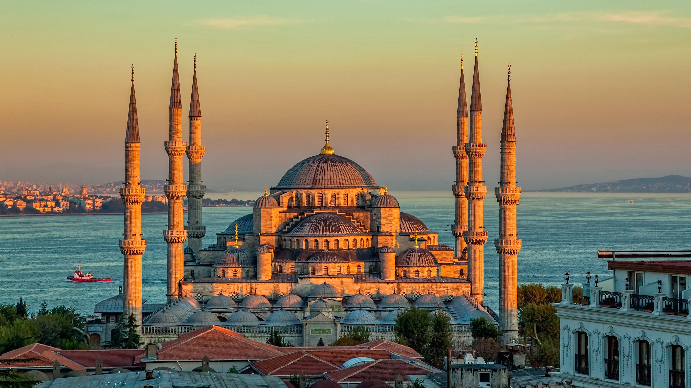
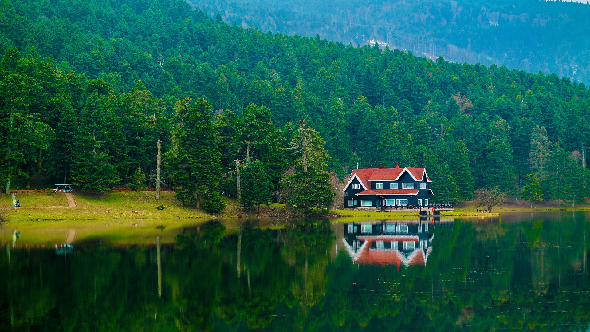

History
The city of Istanbul covers an area of 5343 square kilometers. It was built in 658 BC at the eastern end of the Balkan Peninsula and on the west bank of the southern port of the Bosphorus. It is located on the headland between the Golden Horn and the Marmara Sea, called Byzantium. Istanbul was founded in 660 BC and was called Byzantium at the time. In 324 AD, Constantine the Great of the Roman Empire moved his capital from Rome and changed his name to Constantinople. It became the capital of the Ottoman Empire in 1453. After Kemal established the Republic of Turkey, he moved to Ankara.
The current urban area includes the central and southern sections of the strait and the northern shore of the Marmara Sea connected to it, including Uskudal on the east coast of the strait. It has become a large city across Europe and Asia. The Bosphorus Bridge spanning the strait was built in 1973. There are textiles, food, ceramics, glass, machinery, automobile manufacturing, ship repair and other industries. It is also an important fishing port. There are places of interest such as the Suleymaniye Mosque. Istanbul is also an ancient cultural city, with 34 universities and institutions of higher learning including Istanbul University and Turkish Bosphorus University.
One of the main reasons why Istanbul is famous in the world is its unique geographical location. Between the Black Sea and the Mediterranean Sea, the westernmost point of the Asian continent, there is a crucial "golden waterway" that separates the continents of Asia and Europe. The middle part is the Marmara Sea.

Location
The city of Istanbul is divided into three districts: the old city and Beyoglu business district in Europe, and the Uskudar district in Asia. Beautiful scenery, numerous historical sites, convenient transportation and developed commerce make Istanbul a world-famous tourist city and a jewel shared by the two continents of Europe and Asia.
Istanbul is a famous city spanning Europe and Asia at the same time. It is located in the Marmara region in northwestern Turkey. The Bosphorus Strait and the Golden Horn traverse the Black Sea and the Marmara Sea. As the capital of the three ancient European empires-the Roman Empire, the Byzantine Empire, and the Ottoman Empire, Istanbul has retained its glorious historical heritage and is something the Turkish people should be proud of. Istanbul is indeed fascinated by tourists due to its rich and colorful cultural relics. The museums, churches, mosques, palaces, markets and wonderful natural scenery that it has will make people linger. When the sun sets, standing on the coast of the Bosphorus, when you see the windows on the opposite side of the sea are shining orange red in the afterglow of the setting sun, you will have a deep understanding of why people chose centuries ago. Such an extraordinary place will also sincerely lament that Istanbul is worthy of being the most beautiful city in the world.

Tourist attraction
Istanbul not only spans two continents geographically, but also incorporates the quintessence of the thoughts, cultures, and arts of all ethnic groups in Europe, Asia, and Africa, thus becoming an important intersection of Eastern and Western ideology and culture, leaving behind many historical sites with a long history. There are more than 40 museums, more than 20 churches, and more than 450 mosques in Istanbul. These beautiful buildings and the large collection of cultural relics are vivid witnesses of the intersection of East and West.
In the Museum of the Ancient East, there are Sumerian heads, Babylonian pottery, Assyrian reliefs, etc. These are artifacts from the prehistoric period of the two rivers (Tigris and Euphrates) and the various ethnic groups in Asia Minor. There are a large number of ancient Greek and Roman relics in the Archaeological Museum. Among them, the huge sarcophagus of King Alexander of Macedonia is a masterpiece of Greek art in the 4th century BC. In the Koala Church, there are a large number of frescoes about the Virgin, Christ and Apostles, which are representative works of Byzantine art. In the Suleymaniye Mosque, there are many art treasures from the Ottoman period, carved with beams, painted buildings, and carved with gold and silver. In the old city on the west bank of the city, stone castles, city walls, towers, and aqueducts left over from various empires can be seen everywhere.